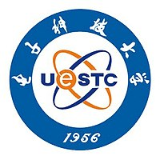

Wang Guo（汪果）
 |
硕士研究生 |
关于我
我目前在电子科技大学攻读电子信息(计算机方向)硕士学位。本人研究生期间获得电子科技大学研究生学业二等奖学金，并且被授予“电子科技大学优秀研究生”荣誉称号。【证书链接】 本人在电子科技大学研究生入学考试成绩中数学一：124分，超过全校80%的研究生。
我的研究兴趣主要包括: Java后端开发、分布式系统、机器学习等。
教育经历
|  | 硕士 电子科技大学 (2021.9 ~ 2024.6)
|
 |
本科 黑龙江科技大学 (2015.9 ~ 2019.6)
|
项目经历
仿抖音后端项目 | 后端开发- 技术选型： ：Java、SpringBoot、MySQL、Redis、MongoDB、RabbitMQ 等
- 主要完成数据库表的设计，并完成视频评论模块、粉丝模块、系统消息、用户验证、视频模块等业务模块的开发。采用Spring Boot 框架进行开发，利用knife4j 进行后端接口管理等。
- 借助RabbitMQ 对重要数据与系统消息进行解耦，提高系统的可用性和效率。同时利用基于雪花算法的Idworker 实现分布式节点全局id 管理。
- 利用Redis 完成粉丝数/关注数/点赞数等计数，保存用户登录Token 信息，缓存不必须马上存入数据库的数据（朋友关系/视频被点赞个数/token 会话信息/缓存验证码（并设置过期策略），同时设置阈值在达到阈值时将数据持久化到数据库。减轻了数据库的压力的同时，提升系统的效率和用户体验感。
- 利用 Nacos 分布式配置中心对需要配置的参数提取出来，便于动态修改，同时利用 Idworker 实现分布式全局 id 生成。
- 利用Nacos 分布式配置中心对需要配置的参数提取出来，动态修改。上线应用并完成了云端服务器的部署。接口测试链接：http://47.115.222.30:8099/doc.html。
基于 Raft 算法的 K-V 分布式存储实现 | 后端开发
- 技术选型：Java、Rocks-DB、SOFA-BOlt、线程池、JUC、Lombok、Slf4j
- 本项目采用Java 语言，实现了Leader 选举、日志复制等功能。接收客户端KV 值包装成日志存在服务器集群中，利用JUC 控制并发，对特定场景保证线程安全，采用Rocks-DB 存储状态机日志，SOFA-Bolt 用于节点RPC 通信等。
- 实现了一致性算法模块、日志模块、选举模块等。并完成Leader 选举投票、附加日志、处理客户端发送到集群中的请求，通过线程池管理线程，便于定位线程相关的问题等。
- 负责Leader 选举模块，在服务器宕机/服务器集群启动情况时完成Leader 选举，提高集群可用性。
- 负责日志复制模块，通过Raft 共识算法保证与Leader 节点的强一致性，实现集群Follower 节点中日志信息与Leader 节点的同步，提升了集群的可用性。
- 技术选型： Python、Numpy、Pandas、Sklearn等
- 负责与广汽本田对接，推进项目进度，负责完成项目的数据分析，模型的训练，以及最终的部署。
- 成果：构建了用于模型在线学习的基本流程框架，并完成了基本开发，并在广汽本田的生产线上上线了第二个版本，提高了异常检出的效率，降低了人工成本。负责：数据接口，数据预处理、模型算法 等，构建的算法异常召回率稳定95%以上，误报率低于4%